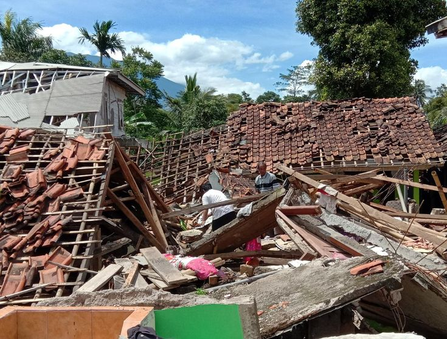

Bencana tanah longsor yang terjadi di Kampung Pamuruyan, Kabupaten Sukabumi, Jawa Barat pada Minggu,(3/12) menimbun dua warga mengakibatkan satu korban meninggal dunia.
"Korban meninggal diketahui bernama Encop Sopiah (51) dan korban selamat yakni Eva (20),
keduanya merupakan warga RT 02/01,
Desa Cisarua, Kecamatan Nagrak," kata Kapolsek Nagrak Iptu Teguh Putra Hidayat di Sukabumi pada Senin, (4/12).
Informasi yang dihimpun dari pihak kepolisian, bencana tanah longsor tersebut dipicu hujan deras sehingga debit air Sungai Cicatih yang mengalir di belakang rumah korban meningkat.
Arus sungai yang kencang mengikis pondasi dan tanah sehingga menyebabkan longsor. Bencana yang terjadi sekitar pukul 21.00 WIB, saat korban tengah terlelap tidur.
2. Gunung Merapi Erupsi di Sumbar
Gunung Marapi yang berada di wilayah administrasi Kabupaten Agam dan Tanah Datar, Sumatera Barat, meletus pada hari ini Minggu (3/12) sekitar pukul 14.54 WIB.
Menurut hasil perekaman seismogram Pusat Vulkanologi dan Mitigasi Bencana Geologi (PVMBG),
erupsi Gunung Marapi terekam dengan amplitudo maksimum 30 mm dan durasi 4 menit 41 detik. Peristiwa meletusnya Gunung Marapi ini juga dibenarkan oleh Kepala Badan Penanggulangan Bencana Daerah (BPBD) Kabupaten Agam, Bambang Wasito dalam sambungan telepon.
3. Covid-19
Corona pertama di Indonesia pertama kali diumumkan pada 2 Maret 2020 lalu oleh Presiden Joko Widodo (Jokowi) bersama Menteri Kesehatan Terawan Agus Putranto, Mensesneg Pratikno dan Seskab Pramono Anung.
Pemerintah mengkonfirmasi kasus 1 dan 2 yang menimpa seorang ibu (64) dan putrinya (31).
di Depok, Jawa Barat.Keduanya terinfeksi Corona dari warga negara Jepang yang sempat datang ke Indonesia pada Februari 2020.
Baca artikel detiknews, "Kasus Corona Pertama di Indonesia,
4. Banjir di Jakarta
Badan Penanggulangan Bencana Daerah (BPBD) DKI Jakarta mencatat, 24 RT di Jakarta Timur dan Jakarta Selatan masih terendam banjir, Senin (8/1/2024).
Kepala Pelaksana BPBD DKI Jakarta Isnawa Adji mengatakan, data tersebut berdasarkan laporan hingga pukul 10.00 WIB.
"BPBD mencatat genangan terjadi penurunan dari 30 RT menjadi 24 RT atau 0,032 persen dari 30.772 RT (terendam)," ungkap Isnawa dalam keterangan tertulisnya.
Artikel ini telah tayang di Kompas.com dengan judul "Update" Banjir Jakarta, 24 RT di Jaktim dan Jaksel Masih Terendam hingga 75 Cm",
5. Gempa di Cianjur

Gempa bumi terjadi hari ini di wilayah Cianjur, (Jawa Barat). Menurut Badan Meteorologi, Klimatologi, dan Geofisika (BMKG), gempa ini berpusat di darat bagian barat daya Cianjur. Warga sempat panik dan keluar rumah saat gempa terjadi.
Menurut parameter gempa bumi yang dilansir situs resmi BMKG, gempa 11 Juni 2023 di Cianjur memiliki kekuatan magnitudo (M) 3,5. Diketahui, gempa bumi yang berpusat di Cianjur ini terjadi pada pukul 11.12 WIB.
BMKG menyebut, pusat gempa berada di darat dengan kedalaman 9 km barat daya Cianjur. Gempa bumi dengan kedalaman 10 km ini berlokasi di 6.86 LS (Lintang Selatan) 107.06 BT
6. Kebakaran Bromo
Kebakaran Gunung Bromo memberikan dampak kerugian negara yang cukup besar yakni mencapai Rp 89 miliar. Para pelaku pembakaran pun terancam sanksi denda atau penjara.
Baca artikel detikjateng, "Kebakaran Bromo Bikin Negara Rugi Rp 89 M, Pelaku Terancam Denda Rp 1,5 M"
atau denda sesuai Undang-undang Nomor 39 tentang Perlindungan dan Pengelolaan Lingkungan.
"Secara hukum ada denda potensial kehilangan berupa ancaman penjara 5 tahun atau denda paling banyak Rp 1,5 miliar,
Baca artikel detikjateng, "Kebakaran Bromo Bikin Negara Rugi Rp 89 M, Pelaku Terancam Denda Rp 1,5 M"